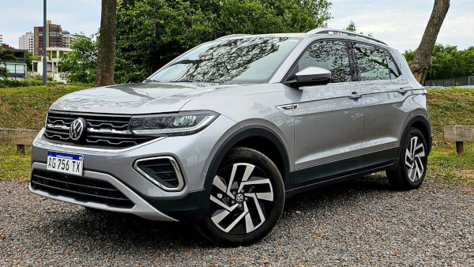

O Volkswagen T‑Cross é um SUV compacto produzido pela Volkswagen que se destaca pelo bom espaço interno, tecnologia e posição de dirigir mais alta. O modelo possui design moderno e robusto, sendo voltado tanto para uso urbano quanto para viagens. Ele costuma ser equipado com motores turbo eficientes, como o 1.0 TSI de cerca de 116 cv, que oferece bom equilíbrio entre desempenho e economia de combustível, geralmente combinado com câmbio automático de seis marchas. Além disso, o T-Cross conta com recursos tecnológicos como central multimídia com conectividade para smartphones, painel digital e diversos sistemas de segurança. Com bom porta-malas e conforto para cinco passageiros, o modelo é uma das opções mais populares entre os SUVs compactos no Brasil
voltar